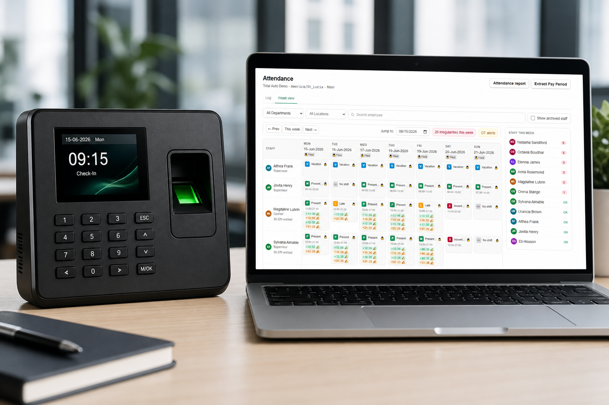
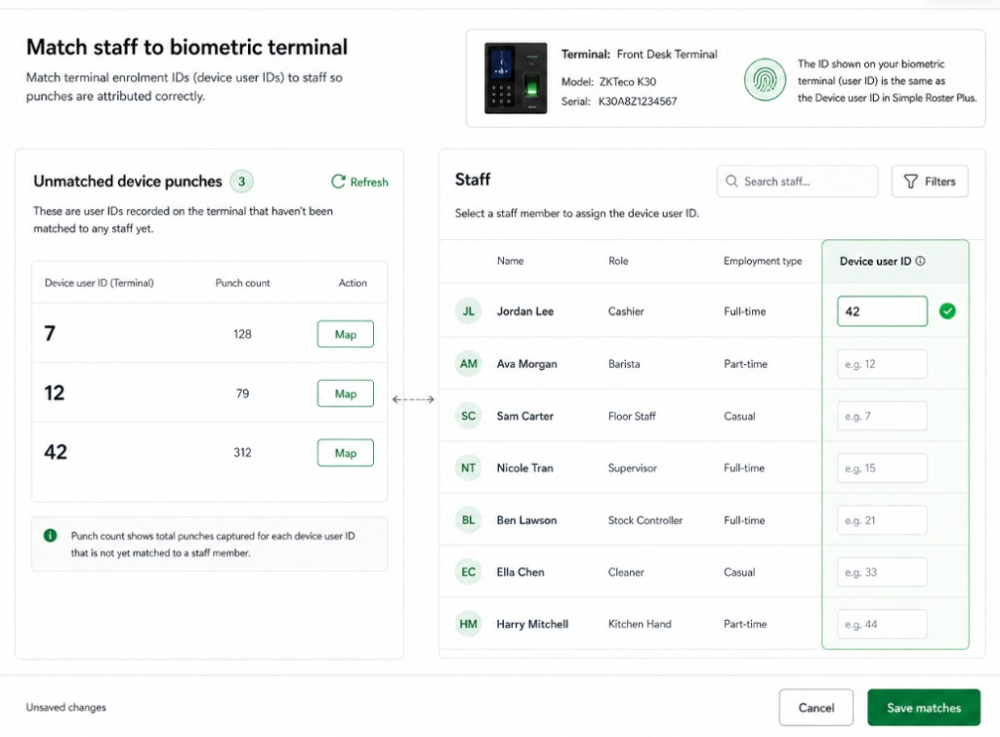

You already have the clock
Keep your supported terminal and send compatible attendance punches into Simple Roster Plus.
Receive compatible ATTLOG punches from supported ZKTeco terminals using ADMS push, then compare employee clock-ins with scheduled shifts in Simple Roster Plus.
Register the terminal, match device user IDs to staff, and review punches beside the weekly roster.

This page is for managers who own or plan to use a supported ZKTeco attendance terminal and need roster-connected software around the punch data.
Keep your supported terminal and send compatible attendance punches into Simple Roster Plus.
Use employee roster software context so clock-ins sit beside scheduled shifts—not in a separate spreadsheet.
Compatibility depends on model, firmware, and configuration. This is not a claim that every ZKTeco device works.
Supported ZKTeco terminals connect outbound to Simple Roster Plus using ADMS push over HTTPS on port 443.
Add the terminal in Devices, assign a location, and keep the device enabled.
Set the public HTTPS server address and port 443 so the device can reach /iclock/*.
Enable ATTLOG or real-time attendance upload. Compatible punch events are received and stored.
Matched punches appear in attendance so managers can compare planned vs actual shifts.
Simple Roster Plus receives compatible ATTLOG punch events—not fingerprint or face templates.
Compatible ATTLOG lines provide terminal user ID, timestamp, and in/out state interpretation.
Devices are recognized by registered serial number. Contact updates last-seen visibility for managers.
Near-duplicate punches within a short window are suppressed so the log stays cleaner.
Each terminal user ID must match the employee’s device user ID at the device’s location. Matching is not automatic without that setup.

If a terminal user is not mapped yet, Simple Roster Plus keeps the punch instead of dropping it.
Unmatched device punches stay available for review with the terminal user ID preserved.
Link the terminal user ID to an employee when you know who it belongs to.
After mapping, prior unmatched punches for that user can attach to the employee.
Setup is guided, not zero-configuration. Managers register the device in Simple Roster Plus, then enter Cloud Server / ADMS settings on the terminal.
Older firmware may require full push and poll URLs instead of a server address alone. The Add Device checklist shows both styles.
Buy with clear expectations. Simple Roster Plus supports selected ADMS-capable terminals that send compatible ATTLOG—not every ZKTeco product or connection method.
ADMS push over HTTPS, compatible ATTLOG ingest, serial registration, staff matching, unmatched recovery, and roster-connected attendance review.
Pull TCP, LAN SDK, Windows agent, BioTime, ZKBio, biometric template storage, automatic discovery, remote device commands, or staff enrolment push to terminals.
Simple Roster Plus stores attendance punch events and staff identifiers, not fingerprint or face templates. Devices are recognized by registered serial number and can be disabled.
Setup guidance is based on ADMS Cloud Server settings commonly used by terminals such as the F22 family. Confirm your exact model and firmware can send compatible ATTLOG records to a cloud server.
Connect terminals within your plan limits. Device slots provide software connectivity. Biometric hardware is not included.
Free
$0 / month
1 device slot with a 30-day live sync trial after the first device connects.
Start FreePlus
$19.99 / month
1 included device connectivity slot. Extra devices available as paid add-ons.
Start FreePro
$49.99 / month
3 included device connectivity slots. Extra devices available as paid add-ons.
Start FreeSee full plan details on the homepage pricing section. Multiple devices are supported within plan limits.
Straight answers based on the current product—not a hardware catalog.
ADMS push. Supported terminals connect outbound to Simple Roster Plus over HTTPS on port 443 and send punches to public /iclock/* endpoints.
No. Pull TCP, LAN SDK, and Windows-agent sync are not available in the cloud product.
Selected ADMS-capable terminals that send compatible ATTLOG. Compatibility depends on the terminal model, firmware, and configuration. There is no certified all-model list.
Setup guidance is based on ADMS Cloud Server settings commonly used by terminals such as the F22 family. Confirm your exact model and firmware can send compatible ATTLOG records to a cloud server.
Register the serial in Simple Roster Plus, set the public HTTPS server address, use port 443, enable HTTPS, turn on ATTLOG or real-time attendance upload, and match terminal user IDs to employee device user IDs. Older firmware may need full push and poll URLs.
The terminal enrolment / user ID must match the employee’s device user ID at the device’s location. Matching is not automatic without that setup.
Unmatched punches are retained. When you map the terminal user to an employee, earlier unmatched punches for that user can backfill.
Supported terminals can push punches promptly when ATTLOG / real-time upload is configured. The manager view is not a guaranteed live-streaming dashboard and may require a refresh.
No. Simple Roster Plus stores attendance punch events and staff identifiers, not fingerprint or face templates.
No. Device slots provide software connectivity. Biometric hardware is not included.
No. There is no BioTime or ZKBio integration in Simple Roster Plus.
Free includes 1 device slot with a 30-day live sync trial. Plus includes 1 device. Pro includes 3 devices. Extra devices are available as paid add-ons where supported.
Create your account, add a device serial, and connect a supported ZKTeco terminal with ADMS push—then review punches beside your weekly roster.